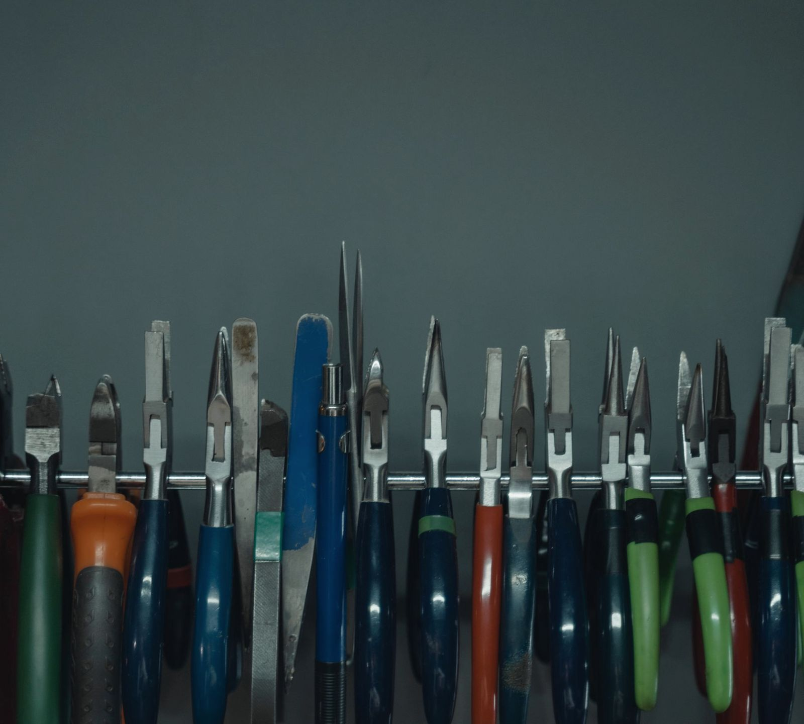
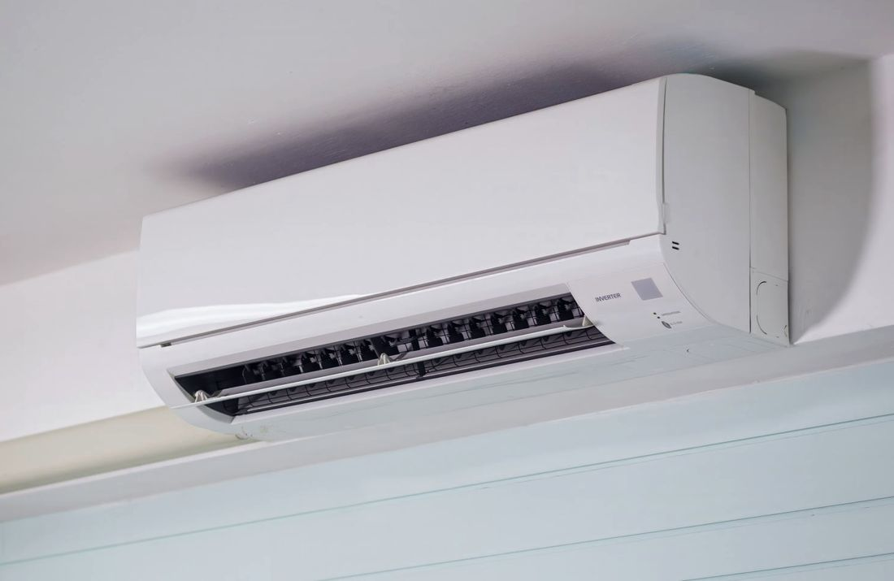
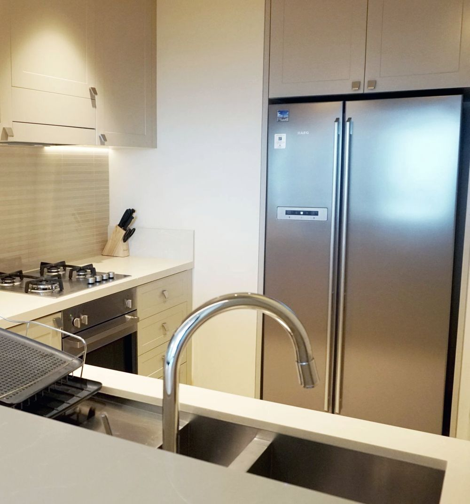

Muratpaşa kombi, klima ve beyaz eşya servisi
Arızayı yerinde bulur, ücreti işe başlamadan söyler, onayınızla tamir ederiz. Kombi, klima, çamaşır ve bulaşık makinesi, buzdolabı: tek telefonla.

Kombiden buzdolabına, evdeki tüm büyük cihazlar
Her marka, her model. Arıza yerinde aranır; çoğu iş tek seferde biter.

01Kombi bakımı
Yanma odası, eşanjör ve fan temizlenir, baca bağlantısı ve su basıncı kontrol edilir. Kış öncesi bakım faturayı ve arıza riskini düşürür.
- Kış öncesi bakım planı
- Su basıncı ve baca kontrolü
 02
02Kombi arıza tamiri
Sıcak su vermeyen, basınç düşüren, hata kodu veren ya da yanmayan kombide arıza yerinde ölçülerek bulunur.
- Yerinde ölçümle arıza tespiti
- Önce tamir, sonra değişim

03Klima bakımı ve ilaçlı yıkama
Filtre ve eşanjör ilaçlı yıkanır, drenaj açılır, gaz basıncı ölçülür. Birden çok klimaya aynı gün sırayla bakılır.
- Koruma örtüsüyle temiz çalışma
- Tüm markalar
 04
04Klima arıza ve gaz kontrolü
Gaz kendiliğinden bitmez; eksikse kaçak vardır. Önce manometreyle ölçüm ve kaçak tespiti, sonra dolum.
- Manometreyle basınç ölçümü
- Kaçak bulunmadan dolum yok

Klima montaj ve söküm
Taşınırken ya da kiracı değişirken klimanızı söküp yeni yerine takıyoruz; temiz boru, düzgün drenaj.

Çamaşır ve bulaşık makinesi
Su boşaltmayan, sıkmayan, ısıtmayan makinelerde pompa, motor, rezistans ve kart tamiri.

Buzdolabı ve derin dondurucu
Soğutmayan, karlanan ya da durmadan çalışan dolaplarda motor, gaz, defrost ve fitil işleri.
Cihazınız ne diyor? 30 saniyede öğrenin
Cihazı ve belirtiyi seçin: olası sebebi, önce sizin bakabileceğiniz şeyi ve ustamızın ne yapacağını görün.
1Cihaz
2Belirti
57 Google yorumu
Google'daki yorumlarınız sitede canlı yer alır; memnun müşteriniz tek dokunuşla yeni yorum bırakır.
Kombi ya da klimanızın bakım zamanı geldi mi?
Dört soruyu yanıtlayın, önerilen bakım tarihinizi hemen görün.
Formu doldurun, usta sizi arasın
Form, WhatsApp mesajı olarak hazırlanır ve tek dokunuşla Uzman as Teknik'e gider.
Çalışma saatleri
| Pazartesi | 08:00 – 23:30 |
| Salı | 08:00 – 23:30 |
| Çarşamba | 08:00 – 23:30 |
| Perşembe | 08:00 – 23:30 |
| Cuma | 08:00 – 23:30 |
| Cumartesi | 08:00 – 23:30 |
| Pazar | Kapalı |
Yüksekalan, 488. Sk. 11A, 07070 Muratpaşa/Antalya
Muratpaşa ve çevresi
Mahallenizi yazın, bölgemizde mi hemen görün.
Sık sorulanlar
Muratpaşa'da servis ne zaman gelir?
Gün içindeki yoğunluğa göre en kısa zamanda. WhatsApp'tan arızayı ve adresinizi yazarsanız gelebileceğimiz saati hemen söyleriz.
Uzman as Teknik hangi saatlerde açık?
Paz–Cum 08–23:30 · Paz Kapalı. WhatsApp'tan her zaman yazabilirsiniz; mesai içinde dönüş yapılır.
Kombi bakımı ne zaman yapılmalı?
Yılda bir kez, ısıtma sezonundan önce (yaz sonu, sonbahar başı) yapılması önerilir. Bakımlı kombi daha az yakar ve kışın ortasında arıza riski düşer.
Klima bakımı ne sıklıkla yapılmalı?
Yalnız yazın kullanılan klimada yılda bir, yaz-kış kullanılanda yılda iki bakım önerilir.
Klimamın gazı bitti mi?
Klima gazı kullanıldıkça azalmaz; eksikse bir yerde kaçak vardır. Önce basınç ölçülür ve kaçağın yeri bulunur, sonra dolum yapılır.
Hangi marka cihazlara bakıyorsunuz?
Kombi, klima ve beyaz eşyada yaygın markaların hepsine bakıyoruz. Markanızı WhatsApp'tan yazın, hemen söyleyelim.
Ücreti önceden öğrenebilir miyim?
Arızayı görmeden kesin fiyat söylemek doğru olmaz. Yerinde tespitten sonra ücreti söyler, onayınızla işe başlarız. Fotoğraf ya da hata kodu gönderirseniz kabaca yön verebiliriz.
Hangi bölgelere geliyorsunuz?
Muratpaşa merkez başta olmak üzere çevre mahallelere geliyoruz. Sayfadaki bölge kontrolüne mahallenizi yazın ya da WhatsApp'tan sorun.
Muratpaşa kombi ve klima servisi: neden Uzman as Teknik?
Muratpaşa'da kombi servisi ya da klima servisi ararken çoğu kişi önce Google yorumlarına bakıyor. Uzman as Teknik, Google'da 57 yorumla 4,9 puana sahip. Kombi bakımı, kombi arıza tamiri, klima bakımı, klima montajı ve gaz kontrolü için adresinize geliyoruz; arıza yerinde ölçülerek bulunuyor, ücret işe başlamadan söyleniyor.
Kombi ve klimanın yanında Muratpaşa beyaz eşya servisi olarak çamaşır makinesi, bulaşık makinesi, buzdolabı, fırın ve şofben tamiri de yapıyoruz. Elektronik kart arızalarında önce tamir yoluna gidiyoruz. Kış gelmeden kombi bakımını, yaz gelmeden klima bakımını planlamak için bakım takvimini kullanabilirsiniz.